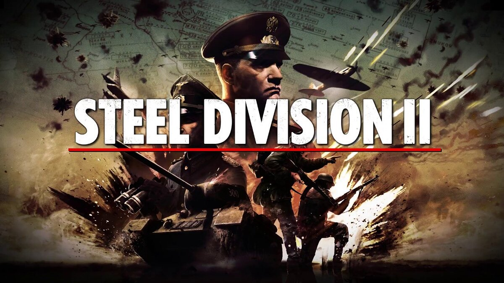
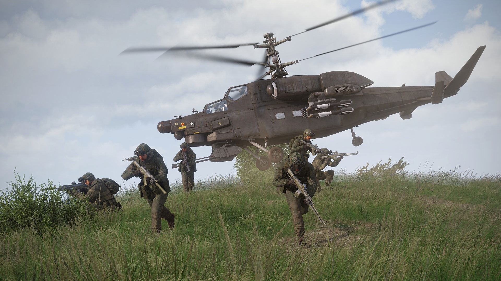

Игры
-
Steel Division 2
Стратегия в реальном времени, действие которой происходит во время операции «Багратион» на Восточном фронте летом 1944 года.
Вы отвечаете за всю свою армию.
В игре представлены сотни часов геймплея, которые можно провести в одиночном, конкурентном мультиплеере или кооперативе.
Steel Division 2 предлагает новые динамичные стратегические кампании 1:1 масштаба. Вы командуете целым войском на огромных картах размером до 150 на 100 километров.
Лично мне нравится эта игра за свою масштабность и вариативность геймплея, это одна из самых любимых мною игр.
-
Arma 3
Arma 3 — это шутер- «песочница» с видом от первого лица, который подарит вам опыт настоящих военных сражений. Игра включает в себя широкий спектр контента, ориентированного как на одиночную кампанию, так и многопользовательский режим. Свыше 20 видов транспортных средств и 40 видов оружия, а также безграничные возможности по созданию пользовательского контента. Образцово-показательная серия военных игр вернулась.
Масштабность "Армы" поражает воображение. В этой игре игроги способны проводить глобальные компании, вступая между собой в пламенную конфронтацию на поле боя, где побеждает тот, кто стратегически переиграет своего оппонента.
-
Garry's Mod

Garry’s Mod — компьютерная игра, физическая «песочница», которая позволяет игроку манипулировать объектами и экспериментировать с физикой, реализм которой обеспечивается движком Source. Данная модификация создавалась для демонстрации обширных возможностей движка Source, который ограничивает свободу игроков только их собственной фантазией и воображением.
Гибкость этой игры не знает границ, мододелы вылепили из этой игры шедевр из мира песочниц, возможность ее кастомизации выше всяких похвал, одна из моих ранее любимых игр.